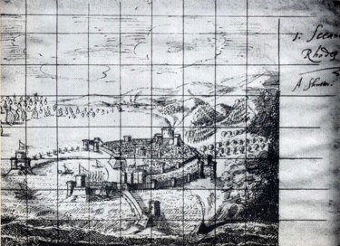
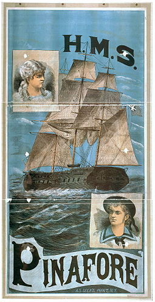
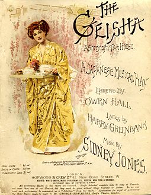
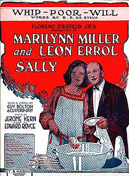

Early antecedents of musical theatre
The antecedents of musical theatre in Europe can be traced back to the theatre of ancient Greece,
where music and dance were included in stage comedies and tragedies during the 5th century BCE.
The music from the ancient forms is lost, however, and they had little influence on later development
of musical theatre. In the 12th and 13th centuries, religious dramas taught the liturgy. Groups of
actors would use outdoor Pageant wagons (stages on wheels) to tell each part of the story. Poetic forms
sometimes alternated with the prose dialogues, and liturgical chants gave way to new melodies.

1850s to 1880s
Around 1850, the French composer Hervé was experimenting with a form of comic musical theatre he called opérette.
In America, mid-19th century musical theatre entertainments included crude variety revue, which eventually
developed into vaudeville, minstrel shows, which soon crossed the Atlantic to Britain, and Victorian
burlesque, first popularized in the US by British troupes.
As transportation improved, poverty in London and New York diminished, and street lighting made for safer
travel at night, the number of patrons for the growing number of theatres increased enormously. Plays ran
longer, leading to better profits and improved production values, and men began to bring their families to
he theatre. The first musical theatre piece to exceed 500 consecutive performances was the French operetta
The Chimes of Normandy in 1878.

1890s to the new century
A Trip to Chinatown (1891) was Broadway's long-run champion (until Irene in 1919), running for 657
performances, but New York runs continued to be relatively short, with a few exceptions, compared with
London runs, until the 1920s.
Meanwhile, musicals took over the London stage in the Gay Nineties, led by producer George Edwardes,
who perceived that audiences wanted a new alternative to the Savoy-style comic operas and their intellectual,
political, absurdist satire.

Early 20th century
Virtually eliminated from the English-speaking stage by competition from the ubiquitous Edwardian musical
comedies, operettas returned to London and Broadway in 1907 with The Merry Widow, and adaptations of
continental operettas became direct competitors with musicals.